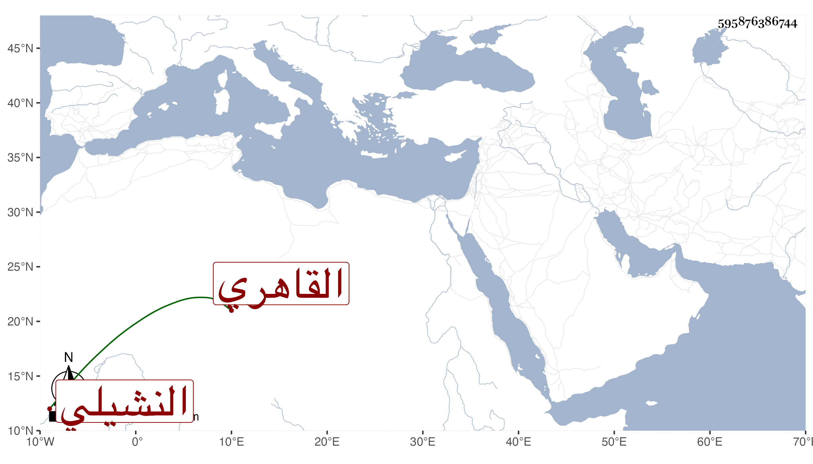

0902Sakhawi.DawLamic.ITO20230111-ara1.EIS1600.595876386744
Biography ID: 595876386744
أحمد بن سلطان النشيلي ثم القاهري . نشأ في خدمة صهره فقيرا جدا وكان يحضر دروسه وتنزل في سعيد السعداء وغيرها بل أم بالسابقية فلما ولي القضاء صار أحد شهود المودع وحضر الترك وكاس وتعددت ثيابه النفيسة الفاخرة وكثرت جهاته فلما امتحن القاضي وجماعته اختفى فدام مدة الترسيم عليهم ثم لما عملت المصلحة ظهر ويقال أنه على مال أيضا وهو من نمطهم في إظهار الأدب مع باطن الله أعلم بحقيقته .
